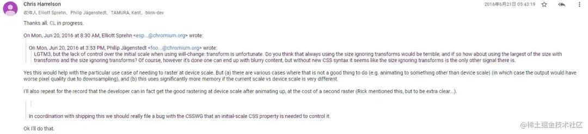

will-change
2024-06-05 20:13:07 · YinHao
一、什么是 will-change？
will-change是一个 CSS 属性，它可以告诉浏览器某个元素将要发生的变化。通过明确指定这些变化，浏览器可以事先分配和优化相应的资源，从而提升渲染的性能。
二、will-change 的使用方法
要使用will-change，只需将它应用于你要进行性能优化的元素上。
.element {
will-change: transform;
}
在上述示例中，我们告诉浏览器，该元素即将发生变换（transform），以便浏览器在渲染时提前分配所需的资源。
值得注意的是，因为will-change是为了性能优化而设计的，滥用它可能会带来负面影响。只在需要优化的元素上使用will-change，避免对所有元素都进行指定。
三、will-change 的原理
要理解will-change的原理，我们需要了解浏览器渲染流程的基本概念。
1. 渲染流程简介
浏览器在渲染网页时，会经历一系列的步骤，如样式计算、布局、绘制和合成。为了提高性能，浏览器会尽量避免进行不必要的计算和操作。
2. will-change 的作用
will-change的作用就是告诉浏览器某个元素将要发生的变化，从而使浏览器在渲染过程中提前分配和优化相应的资源。
例如，当我们设置了will-change: transform时，浏览器会为该元素创建一个独立的图层，将这个图层标记为“即将变换”。这样，在进行布局和绘制时，浏览器就可以更高效地处理这个元素，而无需重新计算整个渲染树。
加入 will-change 后，通过观察复合层，如图下
加入 will-change 后，元素会被提升到单独的复合层，动画（重绘、重排）的操作只会在单独复合层上进行，减少了原来的页面层重绘和重排的行为 注：每一个元素单独加入 will-change 都会单独创建一个复合层，如果给大量的元素加上 will-change 就会创建大量的复合层，反而会影响性能
3. will-change的优化效果
使用will-change可以带来以下优化效果：
- 减少渲染阻塞：浏览器可以提前分配和优化资源，减少渲染阻塞时间，提高页面的响应速度。
- 减少重绘和重排：浏览器可以更好地管理渲染过程，避免不必要的重绘和重排，从而提高渲染性能。
- 硬件加速：某些浏览器对
will-change属性会进行硬件加速，进一步提升性能。
4. will-change使用的时机
在很多关于 will-change 的描述，都能够看到类似下面的一段话
在实际更改的元素上将 will-change 设置为您将实际更改的属性。并在他们停止时将其删除。- Tab Atkins Jr.（规范编辑者）
至于为什么？大部分的描述都是因为 will-change 会消耗浏览器 GPU 资源
当元素有 will-change 时，将元素提升到它们自己的“GPU 层”的浏览器。但有太多元素声明时，浏览器将忽略声明，以避免耗尽 GPU 内存
所以对于 will-change 的使用应该控制时机

在适当的时机移除 will-change 就是减少浏览器的复合层，避免过度使用 will-change 带来性能问题
四、iphone 上使用 will-change 会导致图片模糊、文字模糊问题
在 iphone 上可以看到如果给元素加上 will-change，可能出现模糊现象，分析一下问题
加入 will-change，元素会提升到复合层，提升到复合层后，浏览器做了什么事？
安卓不会而 iphone 会，iphone 上使用的是 safari 浏览器
解：
will-change 加入后，元素提升到复合层，浏览器其实会进行 光栅化
至于为什么 safari 浏览器在元素提升到复合层后，进行光栅化会导致模糊问题，在我们翻阅了各家浏览器内核论坛后，找到一些资料 groups.google.com/a/chromium

大概的内容就是：
在 2016 年之前，不止 safari，谷歌浏览器也是存在模糊的问题，原因是提升复合层后，光栅化的时候，设备比例的变化，导致绘制 图像 的过程变模糊，谷歌是在 2016 年解决的这个问题，所以现在看来我们会在 iphone 上发现模糊问题，在安卓机上并不会
iphone 上模糊的问题，可以通过在执行完重排重绘后在适当的时机移除 will-change（让元素回到原来的页面层，不在单独一个复合层）就可以解决
五、什么操作会将元素提升到复合层
在 CSS 中，以下属性可以将元素提升到复合层:
will-change属性：通过使用will-change属性，告诉浏览器该元素即将发生某种变化，浏览器可以提前将其提升到复合层以进行优化。transform属性：当使用 3D 或 2D 变换时，浏览器会自动将transform属性应用的元素提升到复合层。常见的变换函数如translate(),rotate(),scale()等。backface-visibility属性：当使用backface-visibility: hidden来隐藏元素的背面时，浏览器会将该元素提升到复合层。
需要注意的是，将元素提升到复合层也会增加内存的占用和渲染的复杂性，因此不应滥用。只有当元素需要频繁改变或有复杂的动画效果时，才建议将其提升到复合层。
六、结论
will-change是一种强大的性能优化工具，在现代网页设计中发挥着重要作用。通过明确指定元素将要发生的变化，浏览器可以提前分配和优化相应的 .
使用上也有需要注意的点：
1. 不要给大量的元素添加 will-change，这会导致创建大量的复合层
2. 注意使用的时机，在需要进行重绘/重排行为的时候，才考虑加上 will-change，使用完后需要再适当的时机移除，释放浏览器资源
3. 是否真的需要 will-change，如果页面在性能方面没什么问题，没有必要放个 will-change 来换取那微乎其微的收益，如果收益客观，可加，如果加与不加，差别不大，没必要